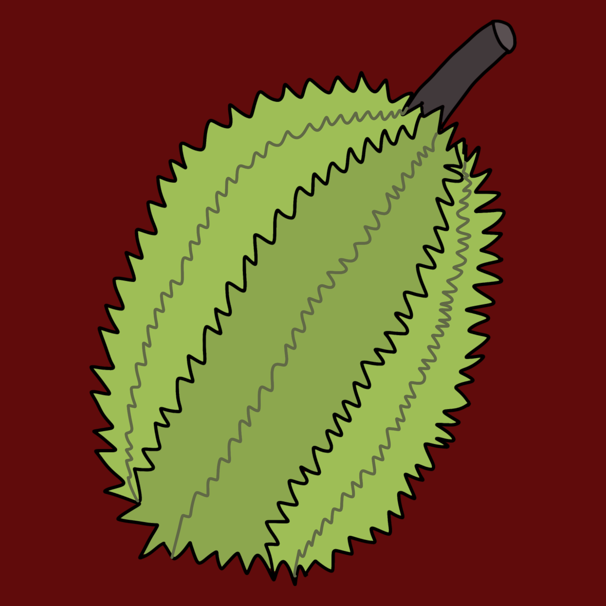

Android Application
Kotlin, device diagnostics and permission management.

INTRODUCING
An upcoming Android Remote Administration and Security Research Platform. Built for learning, transparency and authorized research.
SCROLL TO EXPLORE ↓
JACKFRUIT is an open-source project exploring Android application architecture, device diagnostics, secure networking and transparent remote device administration.
Designed around explicit user consent, secure communication and responsible cybersecurity research.
Kotlin, device diagnostics and permission management.
Python, FastAPI, authentication and secure APIs.
Modern interface for authorized device management.
Security testing, installation guides and documentation.
Proposed technology stack. Subject to change during development.
01 — Explicit user consent
02 — Authenticated sessions
03 — Encrypted communication
04 — Transparent permissions
05 — Authorized research only
======= 🍈 JACKFRUIT.INTRODUCING
JACKFRUIT is an open-source Android Remote Access Trojan (RAT) project developed for controlled laboratory research, Android security experimentation and authorized device testing.
SCROLL TO EXPLORE ↓
JACKFRUIT is an Android Remote Access Trojan (RAT) project. It explores remote device administration, Android application architecture, client-server communication and mobile security.
The project is currently under development. Its intended research environment uses explicit device-owner consent, transparent permissions and authenticated communication.
This repository is not a finished or production-ready application. Use only on devices you own or have explicit authorization to test. No covert access, permission bypass or unauthorized surveillance is intended.
Android application architecture and transparent permission handling.
Authenticated API communication and session management.
Interface for managing authorized test devices.
Permission analysis, security testing and documentation.
The current repository layout and planned development areas:
JACKFRUIT/
│
├── assets/
│ ├── css/
│ │ └── style.css
│ └── JACKFRUIT.png
│
├── android/ [PLANNED]
│ └── app/
│
├── server/
│ ├── api/ [PLANNED]
│ ├── authentication/ [PLANNED]
│ └── requirements.txt
│
├── dashboard/ [PLANNED]
│ └── src/
│
├── docs/
│ ├── architecture.md
│ ├── installation.md
│ └── security.md
│
├── screenshots/
├── .gitignore
├── LICENSE
├── README.md
└── index.htmlCurrent website and repository tools, alongside the proposed application stack.
Planned technologies are not necessarily implemented. The stack may evolve during development.
Anyone can explore the public repository without installing or running the Android application.
Install Git on Linux, Windows or macOS.
git --version
Download the public JACKFRUIT source code.
git clone https://github.com/sangram-net/JACKFRUIT.git
cd JACKFRUIT
Read the README and documentation before using any project components.
cat README.md
Python 3 can serve the static project homepage.
python3 -m http.server 8000
Open http://localhost:8000 in your browser.
Check GitHub for source updates, releases and future installation instructions.
OPEN GITHUB ↗There is currently no documented stable application release. Do not install unverified APKs. Wait for official release instructions and test only with explicit authorization.
01 — Explicit user consent
02 — Authenticated access
03 — Encrypted communication
04 — Transparent permissions
05 — Authorized laboratory testing
06 — No covert surveillance
>>>>>>> bff5ef4 (Launch modern dark JACKFRUIT landing page)Follow the repository to watch JACKFRUIT grow.
FOLLOW ON GITHUB ↗JACKFRUIT is under development. Explore the source, follow progress and contribute responsibly.
>>>>>>> bff5ef4 (Launch modern dark JACKFRUIT landing page)